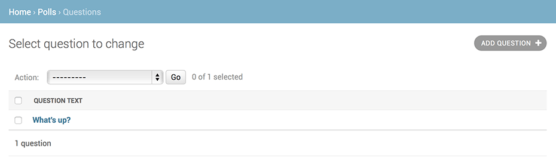

编写你的第一个Django应用，第2部分¶
这部分教程从 第1部分 结尾的地方继续讲起. 我们将建立数据库, 创建您的第一个模型,并主要关注 Django 提供的自动生成的管理页面
数据库配置¶
现在，打开 mysite/settings.py 。这是包含着 Django 项目设置的 Python 模块。
通常，这个配置文件将会使用 SQLite 作为默认数据库。如果你不熟悉数据库，或者只是想尝试一下 Django，使用 SQLite 会是最简单的选择。 Python 已经内置了 SQLite 支持，所以你不需要安装任何其他东西就可以使用它。当你开始第一个真正的项目时，你可能倾向于从一开始就使用更强大的数据库，比如 PostgreSQL，来避免中途切换数据库这个令人头痛的问题。
如果你想使用其他数据库，你需要安装合适的 database bindings ，然后改变设置文件中 DATABASES 'default' 项目中的一些键值：
ENGINE– 可选值有'django.db.backends.sqlite3','django.db.backends.postgresql','django.db.backends.mysql', 或'django.db.backends.oracle'. 其它 可用后端 .NAME- 数据库的名称。如果使用的是 SQLite，数据库将是你电脑上的一个文件，在这种情况下，NAME应该是此文件的绝对路径，包括文件名。默认值os.path.join(BASE_DIR, 'db.sqlite3')将会把数据库文件储存在项目的根目录。
如果你不是使用 SQLite，则必须添加一些额外设置，比如 USER 、 PASSWORD 、 HOST 等等。想了解更多数据库设置方面的内容，请看文档：DATABASES 。
SQLite 以外的其它数据库
如果你使用了SQLite以外的数据库，请确认在使用前已经创建了数据库。你可以通过在你的数据库交互式命令行中使用 “CREATE DATABASE database_name;” 命令来完成这件事。
另外，还要确保该数据库用户中提供 mysite/settings.py 具有 “create database” 权限。这使得自动创建的 test database 将在以后的教程需要。
如果你使用 SQLite，那么你不需要在使用前做任何事 - 数据库会在需要的时候自动创建。
当编辑 mysite/settings.py 文件时,先设置 TIME_ZONE to 为你自己时区.
此外，关注一下文件头部的 INSTALLED_APPS 设置项，这里包括了会在你项目中启用的所有 Django 应用。应用能在多个项目中使用，你也可以打包并且发布应用，让别人使用它们。
通常， INSTALLED_APPS 默认包括了以下 Django 的自带应用：
django.contrib.admin– 管理员站点， 你很快就会使用它。django.contrib.auth– 验证系统。django.contrib.contenttypes– 内容类型框架.django.contrib.sessions– 会话框架.django.contrib.messages– 消息框架.django.contrib.staticfiles– 管理静态文件的框架.
这些应用被默认启用是为了给常规项目提供方便。
默认开启的某些应用需要至少一个数据表，所以，在使用他们之前需要在数据库中创建一些表。请执行以下命令：
$ python manage.py migrate
这个 migrate 命令检查 INSTALLED_APPS 设置，为其中的每个应用创建需要的数据表，至于具体会创建什么，这取决于你的 mysite/settings.py 设置文件和每个应用的数据库迁移文件(我们稍后会介绍这个)。这个命令所执行的每个迁移操作都会在终端中显示出来。如果你感兴趣的话，运行你数据库的命令行工具，并输入 \dt (PostgreSQL)， SHOW TABLES; (MySQL)， .schema (SQLite)或者 SELECT TABLE_NAME FROM USER_TABLES; (Oracle) 来看看 Django 到底创建了哪些表。
写给极简主义者
就像之前说的，为了方便大多数项目，我们默认激活了一些应用，但并不是每个人都需要它们。如果你不需要某个或某些应用(s)，你可以在运行 migrate 前毫无顾虑的从 INSTALLED_APPS 里注释或者删除掉它们。 migrate 命令只会为在 INSTALLED_APPS 里声明了的应用进行数据库迁移。
创建模型¶
在 Django 里写一个数据库驱动的 Web 应用的第一步是定义模型 - 也就是数据库结构设计和附加的其他元数据。
设计哲学
模型是真实数据的简单明确的描述。它包含了储存的数据所必要的字段和行为。Django 遵循 DRY Principle 。它的目标是你只需要定义数据模型，然后其他的杂七杂八代码你都不用关心，它们会自动从模型生成。
来介绍一下迁移 - 举个例子，不像 Ruby On Rails，Django 的迁移代码是由你的模型文件自动生成的，它本质上只是个历史记录，Django 可以用它来进行数据库的滚动更新，通过这种方式使其能够和当前的模型匹配。
在这个简单的投票应用中，需要创建两个模型：问题``Question``和选项``Choice``。问题模型包括问题描述和发布时间。选项模型有两个字段，选项描述和当前得票数。每个选项属于一个问题。
这些概念可以通过一个简单的 Python 类来描述。按照下面的例子来编辑 polls/models.py 文件：
from django.db import models
class Question(models.Model):
question_text = models.CharField(max_length=200)
pub_date = models.DateTimeField('date published')
class Choice(models.Model):
question = models.ForeignKey(Question, on_delete=models.CASCADE)
choice_text = models.CharField(max_length=200)
votes = models.IntegerField(default=0)
代码非常直白。每个模型被表示为 django.db.models.Model 类的子类。每个模型有一些类变量，它们都表示模型里的一个数据库字段。
每个字段都是 Field 类的实例 - 比如，字符字段被表示为 CharField ，日期时间字段被表示为 DateTimeField 。这将告诉 Django 每个字段要处理的数据类型。
每个 Field 类实例变量的名字(例如 question_text 或 pub_date )也是字段名，所以最好使用对机器友好的格式。你将会在 Python 代码里使用它们，而数据库会将它们作为列名。
你可以使用可选的选项来为 Field 定义一个人类可读的名字。这个功能在很多 Django 内部组成部分中都被使用了，而且作为文档的一部分。如果某个字段没有提供此名称，Django 将会使用对机器友好的名称,也就是变量名。在上面的例子中，我们只为 Question.pub_date 定义了对人类友好的名字。对于模型内的其他字段，他们的机器友好名也会被作为人类友好名使用。
定义某些 Field 类实例需要参数。例如 CharField 需要一个 max_length 参数。这个参数的用处不止于用来定义数据库结构，也用于验证数据，我们稍后将会看到这方面的内容。
A Field can also have various optional arguments; in
this case, we’ve set the default value of
votes to 0.
注意在最后，我们使用 ForeignKey 。定义了一个关系。这将告诉 Django，每个 Choice 对象都关联到一个 Question 对象。Django 支持所有常用的数据库关系：多对一、多对多和一对一。
使用模型¶
上面的一小段用于创建模型的代码给了 Django 很多信息，通过这些信息，Django 可以：
为这个应用创建数据库结构(生成
CREATE TABLE语句)。创建可以与
Question和Choice对象进行交互的 Python 数据库 API。
但是首先得把 polls 应用安装到我们的项目里。
设计哲学
Django 应用是”可插拔”的。你可以在多个项目中使用同一个应用。除此之外，你还可以发布自己的应用，因为它们并不会被绑定到当前安装的 Django 上。
再次编辑 mysite/settings.py ，改变 INSTALLED_APPS 设置，使其包含字符串 'polls.apps.PollsConfig' 。它现在看起来应该像这样：
INSTALLED_APPS = [
'polls.apps.PollsConfig',
'django.contrib.admin',
'django.contrib.auth',
'django.contrib.contenttypes',
'django.contrib.sessions',
'django.contrib.messages',
'django.contrib.staticfiles',
]
现在你的 Django 项目会包含 polls 应用。接着运行下面的命令
$ python manage.py makemigrations polls
你将会看到类似于下面这样的输出：
Migrations for 'polls':
polls/migrations/0001_initial.py:
- Create model Choice
- Create model Question
- Add field question to choice
通过 makemigrations 命令，Django 会检测你对模型文件的修改(在这种情况下，你已经取得了新的)，并且把修改的部分储存为一次 迁移。
迁移是 Django 对于模型定义(也就是你的数据库结构)的变化的储存形式 - 没那么玄乎，它们其实也只是一些你磁盘上的文件。如果你想的话，你可以阅读一下你模型的迁移数据，它被储存在 polls/migrations/0001_initial.py 里。别担心，你不需要每次都阅读迁移文件，但是它们被设计成人类可读的形式，这是为了便于你手动修改它们。
Django 有一个自动执行数据库迁移并同步管理你的数据库结构的命令 - 这个命令是 migrate ，我们马上就会接触它 - 但是首先，让我们看看迁移命令会执行哪些 SQL 语句。sqlmigrate 命令接收一个迁移的名称，然后返回给你对应的 SQL：
$ python manage.py sqlmigrate polls 0001
你将会看到类似下面这样的输出(我把输出重组成了人类可读的格式)：
BEGIN;
--
-- Create model Choice
--
CREATE TABLE "polls_choice" (
"id" serial NOT NULL PRIMARY KEY,
"choice_text" varchar(200) NOT NULL,
"votes" integer NOT NULL
);
--
-- Create model Question
--
CREATE TABLE "polls_question" (
"id" serial NOT NULL PRIMARY KEY,
"question_text" varchar(200) NOT NULL,
"pub_date" timestamp with time zone NOT NULL
);
--
-- Add field question to choice
--
ALTER TABLE "polls_choice" ADD COLUMN "question_id" integer NOT NULL;
ALTER TABLE "polls_choice" ALTER COLUMN "question_id" DROP DEFAULT;
CREATE INDEX "polls_choice_7aa0f6ee" ON "polls_choice" ("question_id");
ALTER TABLE "polls_choice"
ADD CONSTRAINT "polls_choice_question_id_246c99a640fbbd72_fk_polls_question_id"
FOREIGN KEY ("question_id")
REFERENCES "polls_question" ("id")
DEFERRABLE INITIALLY DEFERRED;
COMMIT;
请注意以下几点：
输出的内容和你使用的数据库有关，上面的输出示例使用的是 PostgreSQL。
数据库的表名是由应用名(
polls)和模型名的小写形式(question和choice.)连接而来。（如果需要，你可以自定义此行为。）主键(IDs)会被自动创建。(当然，你也可以自定义。)
默认的，Django 会在外键字段名后追加字符串
"_id"。(同样，这也可以自定义。)外键关系由
FOREIGN KEY生成。你不用关心DEFERRABLE部分，它只是告诉 PostgreSQL，请在事务全都执行完之后再创建外键关系。生成的 SQL 语句是为你所用的数据库定制的，所以那些和数据库有关的字段类型，比如
auto_increment(MySQL)、serial(PostgreSQL)和integer primary key autoincrement(SQLite)，Django 会帮你自动处理。那些和引号相关的事情 - 例如，是使用单引号还是双引号 - 也一样会被自动处理。这个
sqlmigrate命令并没有真正在你的数据库中的执行迁移 - 它只是把命令输出到屏幕上，让你看看 Django 认为需要执行哪些 SQL 语句。这在你想看看 Django 到底准备做什么，或者当你是数据库管理员，需要写脚本来批量处理数据库时会很有用。
如果你感兴趣，你也可以试试运行 python manage.py check ;这个命令帮助你检查项目中的问题，并且在检查过程中不会对数据库进行任何操作。
现在，再次运行 migrate 命令，在数据库里创建新定义的模型的数据表：
$ python manage.py migrate
Operations to perform:
Apply all migrations: admin, auth, contenttypes, polls, sessions
Running migrations:
Rendering model states... DONE
Applying polls.0001_initial... OK
这个 migrate 命令选中所有还没有执行过的迁移(Django 通过在数据库中创建一个特殊的表 django_migrations 来跟踪执行过哪些迁移)并应用在数据库上 - 也就是将你对模型的更改同步到数据库结构上。
迁移是非常强大的功能，它能让你在开发过程中持续的改变数据库结构而不需要重新删除和创建表 - 它专注于使数据库平滑升级而不会丢失数据。我们会在后面的教程中更加深入的学习这部分内容，现在，你只需要记住，改变模型需要这三步：
编辑
models.py文件，改变模型。运行
python manage.py makemigrations为模型的改变生成迁移文件。运行
python manage.py migrate来应用数据库迁移。
数据库迁移被分解成生成和应用两个命令是为了让你能够在代码控制系统上提交迁移数据并使其能在多个应用里使用；这不仅仅会让开发更加简单，也给别的开发者和生产环境中的使用带来方便。
通过阅读文档 django-admin documentation ，你可以获得关于 manage.py 工具的更多信息。
初试 API¶
现在让我们进入交互式 Python 命令行，尝试一下 Django 为你创建的各种 API。通过以下命令打开 Python 命令行：
$ python manage.py shell
我们使用这个命令而不是简单的使用 “Python” 是因为 manage.py 会设置 DJANGO_SETTINGS_MODULE 环境变量，这个变量会让 Django 根据 mysite/settings.py 文件来设置 Python 包的导入路径。
Bypassing manage.py
如果你不想使用 manage.py ，没问题，你只要手动将 DJANGO_SETTINGS_MODULE 环境变量设置为 mysite.settings 就行。打开一个普通的 Python 命令行，然后输入以下命令来配置 Django：
>>> import django
>>> django.setup()
如果抛出了 AttributeError ，那么说明你使用的 Django 版本可能和本教程不匹配。你可以切换到旧版本的教程或者把 Django 升级至最新版本。
你必须在 manage.py 所在目录中运行 python 命令，或者确保这个目录在 Python path 里，因为只有这样 import mysite 才能被正确的执行。
阅读文档 django-admin documentation 获取更多信息。
当你成功进入命令行后，来试试 数据库 database API 吧:
>>> from polls.models import Question, Choice # Import the model classes we just wrote.
# No questions are in the system yet.
>>> Question.objects.all()
<QuerySet []>
# Create a new Question.
# Support for time zones is enabled in the default settings file, so
# Django expects a datetime with tzinfo for pub_date. Use timezone.now()
# instead of datetime.datetime.now() and it will do the right thing.
>>> from django.utils import timezone
>>> q = Question(question_text="What's new?", pub_date=timezone.now())
# Save the object into the database. You have to call save() explicitly.
>>> q.save()
# Now it has an ID. Note that this might say "1L" instead of "1", depending
# on which database you're using. That's no biggie; it just means your
# database backend prefers to return integers as Python long integer
# objects.
>>> q.id
1
# Access model field values via Python attributes.
>>> q.question_text
"What's new?"
>>> q.pub_date
datetime.datetime(2012, 2, 26, 13, 0, 0, 775217, tzinfo=<UTC>)
# Change values by changing the attributes, then calling save().
>>> q.question_text = "What's up?"
>>> q.save()
# objects.all() displays all the questions in the database.
>>> Question.objects.all()
<QuerySet [<Question: Question object>]>
等等。用 <Question: Question object> 表示这个对象没什么意思，它无法告诉我们这个对象的详细信息。让我们通过编辑 Question 模型的代码( polls/models.py 文件)，给 Question 和 Choice 增加 __str__() 方法来改善这个问题：
from django.db import models
from django.utils.encoding import python_2_unicode_compatible
@python_2_unicode_compatible # only if you need to support Python 2
class Question(models.Model):
# ...
def __str__(self):
return self.question_text
@python_2_unicode_compatible # only if you need to support Python 2
class Choice(models.Model):
# ...
def __str__(self):
return self.choice_text
给模型增加 __str__() 方法是很重要的，这不仅仅能给你在命令行里使用带来方便，Django 自动生成的 admin 里也使用这个方法来表示对象。
注意：这些都是常规的 Python方法。让我们添加一个自定义的方法，这只是为了演示：
import datetime
from django.db import models
from django.utils import timezone
class Question(models.Model):
# ...
def was_published_recently(self):
return self.pub_date >= timezone.now() - datetime.timedelta(days=1)
新加入的 import datetime 和 from django.utils import timezone 分别导入了 Python 的标准 datetime 模块和 Django 中和时区相关的 django.utils.timezone 工具模块。如果你不太熟悉 Python 中的时区处理，看看 time zone support docs 文档吧。
保存文件然后通过 python manage.py shell 命令再次打开 Python 交互式命令行：
>>> from polls.models import Question, Choice
# Make sure our __str__() addition worked.
>>> Question.objects.all()
<QuerySet [<Question: What's up?>]>
# Django provides a rich database lookup API that's entirely driven by
# keyword arguments.
>>> Question.objects.filter(id=1)
<QuerySet [<Question: What's up?>]>
>>> Question.objects.filter(question_text__startswith='What')
<QuerySet [<Question: What's up?>]>
# Get the question that was published this year.
>>> from django.utils import timezone
>>> current_year = timezone.now().year
>>> Question.objects.get(pub_date__year=current_year)
<Question: What's up?>
# Request an ID that doesn't exist, this will raise an exception.
>>> Question.objects.get(id=2)
Traceback (most recent call last):
...
DoesNotExist: Question matching query does not exist.
# Lookup by a primary key is the most common case, so Django provides a
# shortcut for primary-key exact lookups.
# The following is identical to Question.objects.get(id=1).
>>> Question.objects.get(pk=1)
<Question: What's up?>
# Make sure our custom method worked.
>>> q = Question.objects.get(pk=1)
>>> q.was_published_recently()
True
# Give the Question a couple of Choices. The create call constructs a new
# Choice object, does the INSERT statement, adds the choice to the set
# of available choices and returns the new Choice object. Django creates
# a set to hold the "other side" of a ForeignKey relation
# (e.g. a question's choice) which can be accessed via the API.
>>> q = Question.objects.get(pk=1)
# Display any choices from the related object set -- none so far.
>>> q.choice_set.all()
<QuerySet []>
# Create three choices.
>>> q.choice_set.create(choice_text='Not much', votes=0)
<Choice: Not much>
>>> q.choice_set.create(choice_text='The sky', votes=0)
<Choice: The sky>
>>> c = q.choice_set.create(choice_text='Just hacking again', votes=0)
# Choice objects have API access to their related Question objects.
>>> c.question
<Question: What's up?>
# And vice versa: Question objects get access to Choice objects.
>>> q.choice_set.all()
<QuerySet [<Choice: Not much>, <Choice: The sky>, <Choice: Just hacking again>]>
>>> q.choice_set.count()
3
# The API automatically follows relationships as far as you need.
# Use double underscores to separate relationships.
# This works as many levels deep as you want; there's no limit.
# Find all Choices for any question whose pub_date is in this year
# (reusing the 'current_year' variable we created above).
>>> Choice.objects.filter(question__pub_date__year=current_year)
<QuerySet [<Choice: Not much>, <Choice: The sky>, <Choice: Just hacking again>]>
# Let's delete one of the choices. Use delete() for that.
>>> c = q.choice_set.filter(choice_text__startswith='Just hacking')
>>> c.delete()
阅读 Accessing related objects 文档可以获取关于数据库关系的更多内容。想知道关于双下划线的更多用法，参见 Field lookups 文档。数据库 API 的所有细节可以在 Database API reference 文档中找到。
介绍 Django 管理¶
设计哲学
Generating admin sites for your staff or clients to add, change, and delete content is tedious work that doesn’t require much creativity. For that reason, Django entirely automates creation of admin interfaces for models.
Django 产生于一个公众页面和内容发布者页面完全分离的新闻类站点的开发过程中。站点管理人员使用管理系统来添加新闻、事件和体育时讯等，这些添加的内容被显示在公众页面上。Django 通过为站点管理人员创建统一的内容编辑界面解决了这个问题。
管理界面不是为了网站的访问者，而是为管理者准备的。
输入你想使用的用户名，然后回车。¶
首先，我们得创建一个能登录管理页面的用户。请运行下面的命令：
$ python manage.py createsuperuser
键入你想要使用的用户名，然后按下回车键：
Username: admin
然后提示你输入想要使用的邮件地址：
Email address: admin@example.com
最后一步是输入密码。你会被要求输入两次密码，第二次的目的是为了确认第一次输入的确实是你想要的密码。
Password: **********
Password (again): *********
Superuser created successfully.
启动用于开发的服务器¶
Django 的管理界面默认就是启用的。让我们启动开发服务器，看看它到底是什么样的。
如果服务没有启动它就像这样：
$ python manage.py runserver
现在，打开浏览器，转到你本地域名的 “/admin/” 目录， – 比如 “http://127.0.0.1:8000/admin/” 。你应该会看见管理员登录界面：

因为 翻译 功能默认是开着的，所以登录界面可能会使用你的语言，取决于你的浏览器设置和是否 Django 已被翻译成你的语言。
进入管理站点页面¶
现在，试着使用你在上一步中创建的超级用户来登录。然后你将会看到 Django 管理页面的索引页

你将会看到几种可编辑的内容：组和用户。它们是 django.contrib.auth 提供的，这是 Django 开发的验证框架。
向管理页面中加入投票应用¶
但是我们的投票应用在哪呢？它没在索引页面里显示。
只需要做一件事：我们得告诉管理页面，问题 Question 对象需要被管理。打开 polls/admin.py 文件，把它编辑成下面这样：
from django.contrib import admin
from .models import Question
admin.site.register(Question)
体验便捷的管理功能¶
现在我们向管理页面注册了问题 Question 类。Django 知道它应该被显示在索引页里：

点击 “Questions” 。现在看到是问题 “Questions”. 对象的列表 “change list” 。这个界面会显示所有数据库里的问题Question对象，你可以选择一个来修改。这里现在有我们在上一部分中创建的“What’s up?”问题。
点击“What’s up?”来编辑这个问题（Question）对象：

有些事情需要注意：
这个表单是从问题（Question）模型中自动生成的
不同的字段类型(日期时间字段
DateTimeField、字符字段CharField)会生成对应的 HTML 输入控件。每个类型的字段都知道它们该如何在管理页面里显示自己。每个 日期时间字段
DateTimeField都有 JavaScript 写的快捷按钮。日期有转到今天（Today）的快捷按钮和一个弹出式日历界面。时间有设为现在（Now）的快捷按钮和一个列出常用时间的方便的弹出式列表。
页面的底部提供了几个选项：
保存（Save） - 保存改变，然后返回对象列表。
保存并继续编辑（Save and continue editing） - 保存改变，然后重新载入当前对象的修改界面。
保存并新增（Save and add another） - 保存改变，然后添加一个新的空对象并载入修改界面。
删除（Delete） - 显示一个确认删除页面。
如果显示的“发布日期（Date Published）”和你在 教程第一部分 里创建它们的时间不一致，这意味着你可能没有正确的设置 TIME_ZONE 。改变设置，然后重新载入页面看看是否显示了正确的值。
通过点击“今天”（Today）和“现在（Now）”按钮改变“发布日期（Date Published）”。然后点击“保存并继续编辑（Save and add another）”按钮。然后点击右上角的“历史（History）”按钮。你会看到一个列出了所有通过 Django 管理页面对当前对象进行的改变的页面，其中列出了时间戳和进行修改操作的用户名：

当你熟悉了数据库 API 之后，你就可以开始阅读 教程第三部分 ，下一部分我们将会学习如何为投票应用添加更多视图。